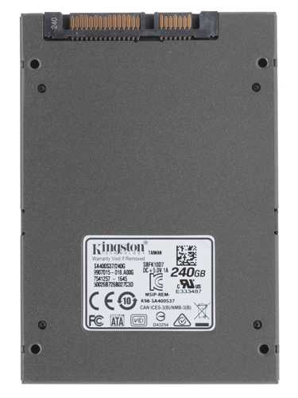
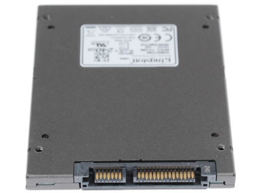

г.Москва, ул.Ленина, 5Б
Интернет магазин техники и электроники

Kingston SA400S37/240G

- 
- 
Описание
SSD-накопитель Kingston A400 имеет достаточно большую емкость (240 ГБ). Такого объема достаточно не только для установки операционной системы, но и для множества программ, а, возможно, и нескольких игр. Использование SSD сделает скорость работы системы в 10 раз выше, чем она была бы с HDD. Запуск компьютера будет занимать считанные секунды, файлы будут открываться и сохраняться быстрее. Ускорится даже загрузка файлов из Интернет, так как они будут записываться на накопитель практически мгновенно.
Kingston A400 работает на базе контроллера Phison PS3111-S11 и использует чипы памяти TLC. Для подключения к материнской плате используется SATA III, питание подается через разъем 15 pin.
Характеристики
Тип жесткого диска
Объем накопителя
Форм-фактор
Интерфейс
Максимальная скорость чтения
Максимальная скорость записи
Время наработки на отказ
Тип памяти NAND
Ресурс TBW
Объем накопителя
Форм-фактор
Интерфейс
Максимальная скорость чтения
Максимальная скорость записи
Время наработки на отказ
Тип памяти NAND
Ресурс TBW
SSD
480 ГБ
2.5"
SATA III
500 МБ/с
450 МБ/с
1000000 ч
3D NAND
160 ТБ
480 ГБ
2.5"
SATA III
500 МБ/с
450 МБ/с
1000000 ч
3D NAND
160 ТБ